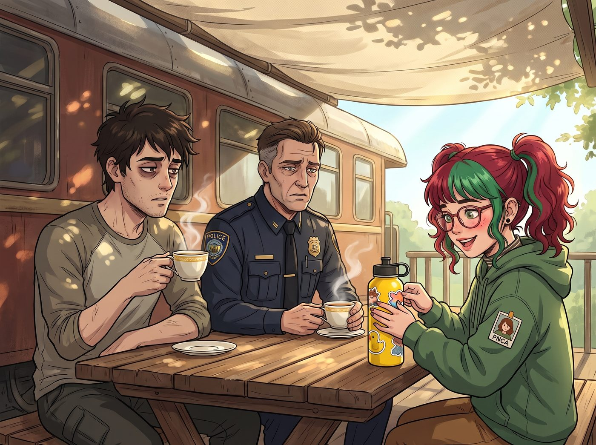

非正式行政黑魔法諮詢會

週六下午，二號車廂的戶外遮陽棚下，一場被後世稱為「西雅圖非正式行政黑魔法諮詢會」的聚會正在進行。
坐在長桌左邊的，是剛升任某二流頭部品牌折扣電商技術中層的 Kenji。他眼下掛著濃重的黑眼圈，髮際線似乎又往後退了一公分。坐在右邊的，則是已經身經百戰、制服筆挺但滿臉寫著心力交瘁的資深警官 Leon。
這兩位在各自領域的專業人士，此刻正像兩個迷茫的小學生，雙手捧著 Kate 剛泡好的洋甘菊茶，無比虔誠地看著對面正在給小黃鴨水壺貼貼紙的實習生 Lily。
一、電商中層的向上管理
「我真的撐不住了，Lily。」Kenji 語氣虛弱，推了推厚重的眼鏡，「我們那個剛從大廠跳槽過來的新任 CTO，為了一己私利刷 KPI，強迫我們技術部在兩週內上線一套基於用戶瀏覽畫像的動態殺熟定價 AI。不僅每天逼我們加班到凌晨兩點，如果代碼出錯，還要扣我們整個團隊的年終獎金。我在想要不要直接辭職。」
Lily 放下貼紙，溫柔地看著 Kenji，大眼睛裡滿是悲憫。
「Kenji 前輩，辭職是對資本的妥協。真正的向上管理，是合法地剝奪上司的管理權限。」Lily 翻開黑色筆記本，語氣軟糯，「您完全不需要反抗他。您只需要在今晚，將這套動態殺熟 AI 的測試數據庫模型，以誤操作的方式抄送給公司的法務部和公關部。同時，用虛擬 IP 向聯邦貿易委員會的消費者反欺詐信箱發送一封匿名檢舉，暗示貴公司正在進行針對低收入社區的算法價格歧視。」
Kenji 愣住了。
「到了明天早上，」Lily 露出一個純潔的微笑，「您公司的法務總監會親自帶著保安衝進 CTO 的辦公室，強行拔掉他的網線，並無限期凍結這個專案。您的團隊不僅不用加班，CTO 本人還將面臨長達半年的合規審查。您可以安心過週末了。」
Kenji 雙手顫抖著捧著茶杯，看著 Lily 的眼神彷彿在看一尊活著的賽博神明。
二、資深警官的降維打擊
Leon 嚥了一口口水，趕緊把自己的卷宗遞了過去。
「Lily，輪到我了。西雅圖南區有個盤踞多年的地下黑車改裝廠，我們都知道他們在幫黑幫洗錢和銷贓。但檢察官說證據不足以發起連坐法起訴，而且警局預算不夠打長期的監視消耗戰。我們拿他們一點辦法都沒有。」
Lily 翻了兩頁卷宗，輕輕嘆了口氣：「Leon 警官，刑事訴訟的舉證責任太重了，這很不符合成本效益。」
「那我該怎麼辦？帶特警隊去踹門嗎？」
「不，您應該打電話給環保署和職業安全與健康管理局。」Lily 用紅筆在卷宗的改裝廠地址上畫了個圈，「這種地下黑車廠，絕對沒有處理廢棄機油、電池酸液的合法資質，更不可能為黑幫小弟繳納工傷保險。您只需要向環保署檢舉他們在城市水源地附近非法傾倒危險化學廢料。」
Lily 抬起頭，語氣依然甜美：「刑事案件可以保釋，但聯邦環保重罪的現場查封是不可逆的。到了下週三，穿著防化服的聯邦探員會直接接管那片街區，把所有黑幫成員當成生化污染源強行隔離調查。這連你們警局的預算都省了。」
Leon 呆坐在椅子上。他當了這麼多年警察，第一次意識到，原來反黑組的盡頭不是重案組，而是美國環保署。
三、鍋從天上來
「太可怕了……也太完美了。」Leon 喃喃自語，滿臉敬畏，「Lily，妳到底是從哪裡學來這些把官僚體系玩弄於股掌之間的手段的？這根本不是一般學校能教出來的。」
聽到這句誇獎，Lily 羞澀地低下了頭，雙手乖巧地交疊在裙襬上。
她站起身，轉過頭，對著正在不遠處修皮卡保險桿的 Chloe，以及正在擦拭相機鏡頭的 Max，深深地鞠了一個九十度的躬。
「Leon 警官，Kenji 前輩，您們過譽了。我本來只是一個什麼都不懂、只會死讀書的笨實習生。」Lily 的語氣充滿了真誠的感恩與崇拜，「是 Max 學姐和 Price 學姐在日常生活中的言傳身教，給了我最深刻的啟蒙。」
空氣突然安靜了。
「什麼？」Chloe 舉著扳手，滿身機油地轉過頭，一臉懵逼。
「Price 學姐教導我，面對強權，絕不能坐以待斃，必須主動出擊，把別人的規則變成自己的武器。」Lily 眼中閃爍著小星星，「而 Max 學姐的蝴蝶效應更是我的終極指導思想——一個微小的行政失誤，只要放在正確的監管槓桿上，就能引發摧毀整個財團的合規風暴。我所有的黑魔法，都不過是對她們倆街頭生存哲學與時空因果律的拙劣模仿罷了。」
Leon 和 Kenji 瞬間轉過頭，用一種混合了極度恐懼、敬畏的眼神，死死盯著 Max 和 Chloe。
「不！等等！我們沒有！」Chloe 嚇得扳手直接掉在了腳背上，痛得跳了起來，「老娘這輩子做過最出格的行政操作，就是把違規停車的罰單撕了扔進下水道！我連自己的報稅單都不會填！我沒教過她這些！」
「我也沒有！」Max 崩潰地捂住臉，感覺聯邦調查局的無人機已經在自己頭頂盤旋了，「我跟她說的蝴蝶效應，是為了讓她珍惜當下、保護環境！不是為了讓她去引發企業的合規海嘯！Lily，妳不要把這種反人類的行政天賦算在我們頭上！」
但已經太遲了。
Kenji 默默地在心裡給 Max 和 Chloe 的危險等級上調到了最高，決定以後電商平台的折扣碼再也不敢對她們限流；而 Leon 則神情複雜地站起來，對著兩人敬了個不太標準的禮，彷彿在向西雅圖真正的地下教父致意。
只有 Kate 端著剛烤好的餅乾從車廂裡走出來，看著崩潰的兩人，笑瞇瞇地說：「看到大家都在互相學習、共同成長，這個家真是越來越溫暖了呢。」